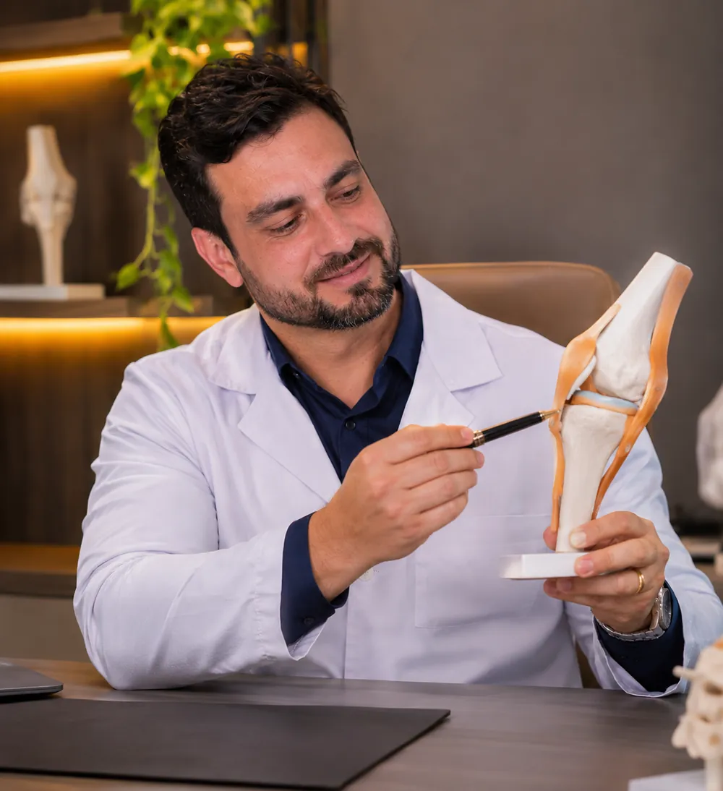
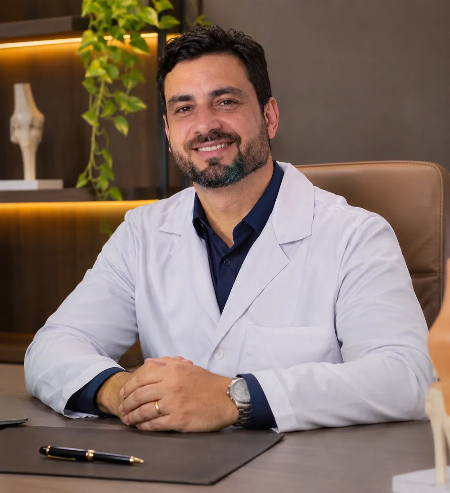

Ortopedista · Rio de Janeiro/RJ
Volte a se mover sem medo da dor.
Especialista em joelho e medicina esportiva. Diagnóstico claro, tratamento sem pressa para operar e um plano para você voltar ao que gosta de fazer.
Entenda seu joelho
Peça por peça, sem mistério.
O maior osso do corpo. Na ponta, dois côndilos arredondados deslizam sobre a tíbia a cada passo.
A base que recebe o seu peso. É nela que o joelho se apoia para caminhar, correr e saltar.
A rótula funciona como uma alavanca: aumenta a força da coxa na hora de esticar a perna.
Dois amortecedores em forma de meia-lua. Torções no esporte estão entre as causas mais comuns de lesão.
Seguram o joelho nas mudanças de direção. Quando o LCA rompe, a sensação é de joelho "falseando".
Onde dói?
Toque onde incomoda.
Veja o que costuma causar dor em cada região e fale direto com o consultório sobre o seu caso. Isso é informação geral, não substitui a consulta.
Toque nos pontos do corpo
Do primeiro passo ao retorno
Um plano com começo, meio e volta.
Você sabe em que etapa está, o que vem depois e o que precisa fazer em cada uma. Sem consulta corrida, sem dúvida no caminho de casa.

Escuta
Como a dor começou, o que piora, qual esporte ou rotina você quer retomar.
Diagnóstico
Exame físico detalhado e, quando necessário, exames de imagem explicados na tela com você.
Tratamento
Fisioterapia, fortalecimento, infiltração ou cirurgia, só quando ela realmente for o melhor caminho.
Volta ao esporte
Critérios claros de força e estabilidade antes de liberar. Voltar bem é tão importante quanto voltar logo.
Tratamentos
O que eu trato.
Cada item abre uma conversa no WhatsApp já com o assunto, para o atendimento ser mais rápido.
"Com artrose, tem que parar de se exercitar."
Na maioria dos casos, é o contrário. O exercício orientado fortalece a musculatura que protege a articulação e costuma reduzir a dor com o tempo.
Parar de vez, sem orientação, tende a enfraquecer a perna e piorar o quadro. O segredo é o tipo certo de exercício, na dose certa para você.

Sobre
Dr. Rafael Moretti
Tirar a dor é o começo. O objetivo é devolver o movimento que você gosta de fazer.
Ortopedista dedicado ao joelho e à medicina esportiva. Atende desde quem quer voltar a caminhar sem dor até atletas que precisam retornar às competições, sempre explicando cada etapa com calma.
- Formação em Ortopedia e Traumatologia
- Especialização em Cirurgia do Joelho e Medicina Esportiva
- Atendimento particular, com recibo para reembolso
Dúvidas
Antes de agendar.
Preciso de pedido médico para a consulta?
Não. Você pode agendar direto pelo WhatsApp. Se já tiver exames, leve no dia: eles ajudam a ganhar tempo.
Toda lesão no joelho precisa de cirurgia?
Não. Grande parte dos casos melhora com fisioterapia, fortalecimento e ajustes na rotina. A cirurgia é indicada quando ela é realmente o melhor caminho para o seu caso.
Quanto tempo leva para voltar ao esporte?
Depende da lesão e do esporte. O retorno é liberado por critérios de força e estabilidade, não só pelo calendário. Na consulta você recebe uma estimativa para o seu caso.
Atende convênio?
O atendimento é particular, com recibo para você pedir reembolso ao seu plano de saúde.
Atende atletas amadores?
Sim. Corredores de fim de semana, praticantes de futebol, beach tennis, crossfit e academia são boa parte dos pacientes.
Agende sua avaliação
Seu joelho não precisa te parar.
Mande uma mensagem e a equipe encontra o melhor horário para você.